library(tidymodels)Prediction w/ tidyModels
PART 1: What are tidyModels?
A modeling framework!
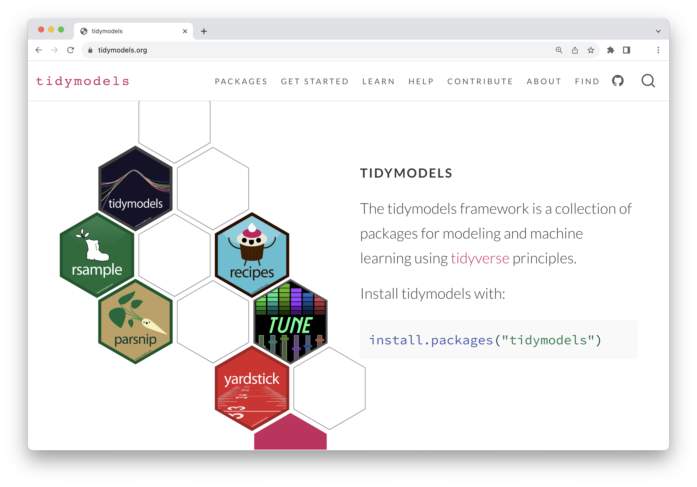
What we will be working on today
- A simplified predictive modeling workflow.
Machine learning as a predictive modeling process

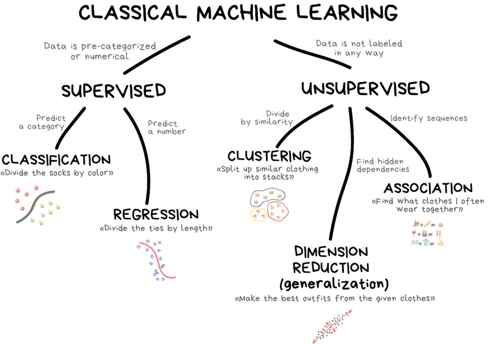
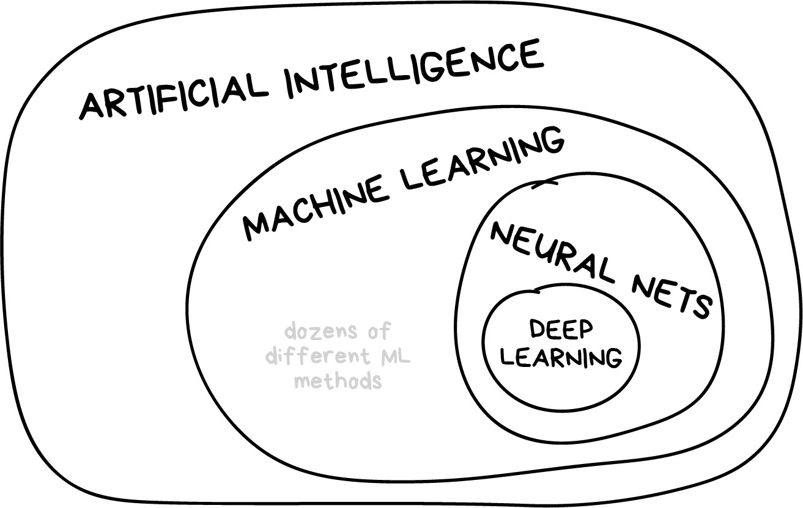
Your turn
How are statistics and machine learning related?; How are they different?
Only open when you have researched your answers for these questions
Statistics and machine learning both use data to identify patterns, build models, and make predictions. Statistics often emphasizes explanation, inference, and uncertainty, whereas machine learning often emphasizes predictive performance on new data—but the two fields overlap substantially.
They are sometimes thought of as capturing “two cultures:” Model first vs. data first; or inference vs. prediction
The whole game
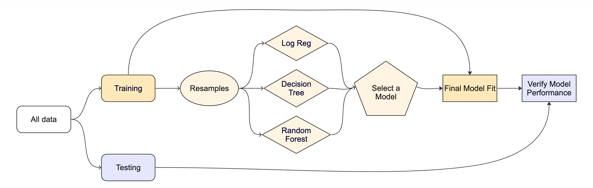
Splitting data (aka your data budget) and building a decision tree
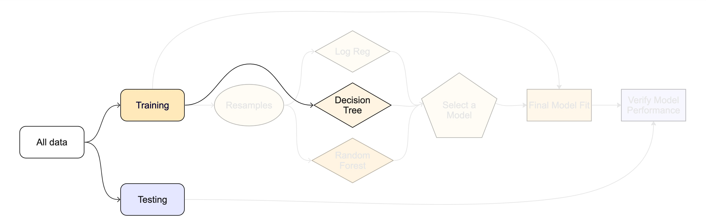
Cross validation, i.e., resampling
- Comparing multiple model types and evaluating to identify best one
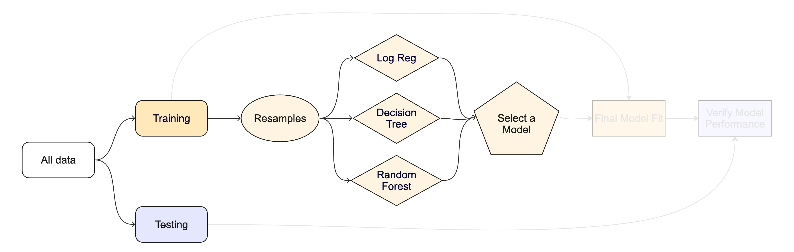
Creating a final model fit object and doing a final test
Data
Taxi trips in Chicago in 2022
The city of Chicago releases anonymized trip-level data on taxi trips in the city. We will use a dataset that pulls a sample of 10,000 rides occurring in early 2022.
Tip
Type ?taxi to learn more about this dataset, including references.
library(tidymodels)glimpse(taxi)Rows: 10,000
Columns: 7
$ tip <fct> yes, yes, yes, yes, yes, yes, yes, yes, yes, yes, yes, yes, y…
$ distance <dbl> 17.19, 0.88, 18.11, 20.70, 12.23, 0.94, 17.47, 17.67, 1.85, 1…
$ company <fct> Chicago Independents, City Service, other, Chicago Independen…
$ local <fct> no, yes, no, no, no, yes, no, no, no, no, no, no, no, yes, no…
$ dow <fct> Thu, Thu, Mon, Mon, Sun, Sat, Fri, Sun, Fri, Tue, Tue, Sun, W…
$ month <fct> Feb, Mar, Feb, Apr, Mar, Apr, Mar, Jan, Apr, Mar, Mar, Apr, A…
$ hour <int> 16, 8, 18, 8, 21, 23, 12, 6, 12, 14, 18, 11, 12, 19, 17, 13, …
Note
tip: Whether the rider left a tip. A factor with levels “yes” and “no”.
distance: The trip distance, in odometer miles.
company: The taxi company, as a factor. Companies that occurred few times were binned as “other”.
local: Whether the trip started in the same community area as it began. See the source data for community area values.
dow: The day of the week in which the trip began, as a factor.
month: The month in which the trip began, as a factor.
hour: The hour of the day in which the trip began, as a numeric.
Checklist for predictors
- Is it ethical to use this variable? (Or even legal?)
- Will this variable be available at prediction time?
- Does this variable contribute to explainability?
PART 2: Data Budget
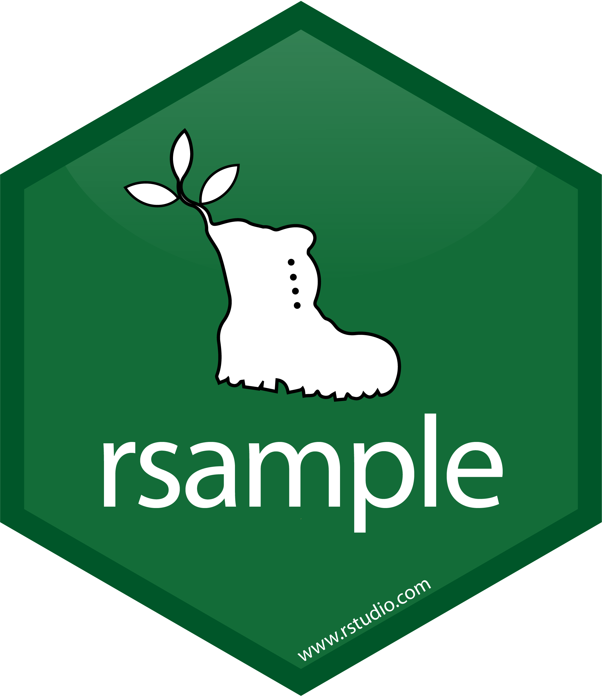
Data splitting and spending
Always have a separate piece of data that can contradict what you believe!
For machine learning, we typically split data into training and test sets:
- The training set is used to estimate model parameters.
- The test set is used to find an independent assessment of model performance. Do not 🚫 use the test set during training. The test set is precious 💎
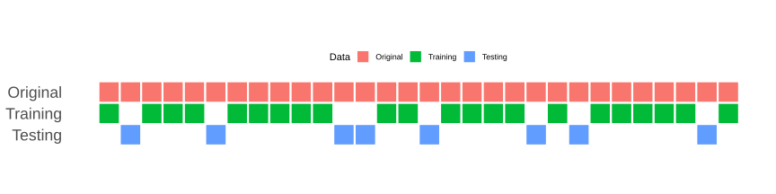
Spending too much data in training prevents us from computing a good assessment of predictive performance.
Spending too much data in testing prevents us from computing a good estimate of model parameters.
Your turn
When is a good time to split your data?
The initial split
set.seed(123)
taxi_split <- initial_split(taxi)
taxi_split<Training/Testing/Total>
<7500/2500/10000>
How much data in training vs testing?
This function uses a good default, but this depends on your specific goal/data. There are more powerful ways of splitting, like stratification, that we will get into later.
What is set.seed()?
To create that split of the data, R generates “pseudo-random” numbers: while they are made to behave like random numbers, their generation is deterministic give a “seed”.
This allows us to reproduce results by setting that seed.
Which seed you pick doesn’t matter, as long as you don’t try a bunch of seeds and pick the one that gives you the best performance.
Accessing the data
taxi_train <- training(taxi_split)
taxi_test <- testing(taxi_split)The training set
taxi_train# A tibble: 7,500 × 7
tip distance company local dow month hour
<fct> <dbl> <fct> <fct> <fct> <fct> <int>
1 yes 0.7 Taxi Affiliation Services yes Tue Mar 18
2 yes 0.99 Sun Taxi yes Tue Jan 8
3 yes 1.78 other no Sat Mar 22
4 yes 0 Taxi Affiliation Services yes Wed Apr 15
5 yes 0 Taxi Affiliation Services no Sun Jan 21
6 yes 2.3 other no Sat Apr 21
7 yes 6.35 Sun Taxi no Wed Mar 16
8 yes 2.79 other no Sun Feb 14
9 yes 16.6 other no Sun Apr 18
10 yes 0.02 Chicago Independents yes Sun Apr 15
# ℹ 7,490 more rowsThe test set
DON’T PEEK! 🙈
There are 2500 rows and 7 columns in the test set.
Your turn
Split your data so 20% is held out for the test set and show the first 10 rows of so of the training data
Try out different values in
set.seed()to see how the results change.Exploratory data analysis
As you know by now, before we get too far into our data analysis, we want to do some exploration with visualizations. So lets get to it.
Your turn
What’s the distribution of the outcome,
tip?What’s the distribution of numeric variables like
distance?How does
tipdiffer across the categorical variables?
Open only after you’ve attempted to generate a few plots on your own
For taxi-tip-counts, what about using geom_bar() with just tip?
For taxi-tip-by-distance, I would recommend geom_histograms and play around with the bin size. You will also want to incorporate facet_grid.
For taxi-tip-by-hour, I would plot making use of fill= and geom_bar
For taxi-tip-by-local, I’ll leave this one up to you, but add a colore palette for color-blind people.
Split smarter
Our EDA showed that the dataset contains fewer “no” tip outcomes than “yes” tip outcomes. With a completely random split, one partition could receive disproportionately few “no” observations.
Stratified sampling performs the split separately within each outcome category. This helps the training and test sets retain approximately the same proportion of “yes” and “no” outcomes as the original dataset.
Stratified sampling would split within response values
Proof that there are fewer “no” tips through EDA
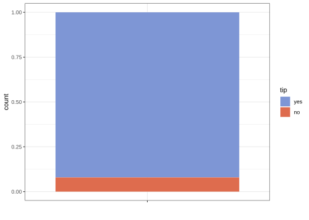
Tip
Regression: Because the outcome is continuous, stratification can divide its values into ranges—often quantile-based groups—and sample within those ranges. This helps both sets represent the full outcome distribution.
Time-series data: We generally preserve chronological order rather than randomly splitting. We train on earlier observations and assess performance on more recent observations, which better matches prediction in practice.
Your turn
Go back and modify your earlier code where you split the data to stratify by tip
PART 3: Do It the tidyModels Way: Building a Model Step-by-Step
In tidyModels, building a model follows three main steps:
Choose a Model Type – What kind of model do we need? Linear regression? Logistic regression? A decision tree?
Specify an Engine – How do we want to fit this model? Each model can be fit using different tools, known as “engines.”
Set the Mode – Are we predicting a category (classification) or a number (regression)?
Let’s walk through each step and see examples along the way!
Step 1: Choose a Model Type
The model type determines the basic approach for how we’ll make predictions.
After deciding whether we have a regression or classification problem, we choose a model type. Different models make different assumptions and learn patterns in different ways. There is rarely one model that is automatically best, so we often compare several using resampling.
Here are a few examples:
Linear Regression: Good for predicting numbers, like predicting the price of a house.
Logistic Regression: Useful for binary categories, like predicting whether a customer will tip (yes or no).
Decision Tree: Can be used for either regression (predicting numbers) or classification (predicting categories). Creates a series of if/then rules by repeatedly splitting the data.
To see all the available model types in tidyModels, check out this list of models: https://www.tidymodels.org/find/parsnip/
Example: Let’s start with a basic linear regression model. This type of model is used when we want to predict a continuous number, such as predicting house prices.
linear_reg()Linear Regression Model Specification (regression)
Computational engine: lm This code sets up a linear regression model with the default settings, which includes a default engine (lm for linear model).
Now let’s look at a logistic regression model. This type of model is used when we want to predict a binary outcome with two possible categories, such as whether a taxi passenger will leave a tip (“yes” or “no”).
logistic_reg()Logistic Regression Model Specification (classification)
Computational engine: glm Step 2: Specify an Engine
An engine is the underlying R package or function that performs the model fitting. The model type is the general method; the engine is its specific software implementation.
For example:
linear_reg()typically uses the"lm"engine.logistic_reg()typically uses the"glm"engine.decision_tree()typically uses the"rpart"engine.rand_forest()commonly uses the"ranger"engine.
Some model types have multiple possible engines. Alternative engines may use different estimation methods, such as regularization, Bayesian estimation, or distributed computing. However, not every engine is available for every model type.
Example: Let’s specify the engine for linear regression as glm, which is often used for logistic or generalized models.
linear_reg() %>%
set_engine("glm")Linear Regression Model Specification (regression)
Computational engine: glm Here, linear_reg() identifies the model type, while set_engine("glm") tells tidymodels to fit it using R’s glm() function.
Now, if we wanted to use Stan for Bayesian regression, we can change the engine like this:
linear_reg() %>%
set_engine("stan")Linear Regression Model Specification (regression)
Computational engine: stan This flexibility allows us to choose the best method for our data and problem.
Step 3: Set the Mode
The mode tells tidyModels whether our goal is regression (predicting a number) or classification (predicting a category). Some models have a default mode, while others require us to specify it.
Regression Mode: Use for predicting a number (like house prices).
Classification Mode: Use for predicting categories (like whether a customer will tip).
Example: Let’s set up a decision tree model. A decision tree can be used for either classification or regression, so we need to set the mode explicitly if it’s not clear from the context.
decision_tree() %>%
set_mode("classification")Decision Tree Model Specification (classification)
Computational engine: rpart Here, we’re setting the decision tree to classification mode, which tells tidyModels that we’re using it to predict categories.
Summary
- Choose a Model – Decide on the model type based on what you’re predicting.
- Specify an Engine – Choose the fitting method, like lm for a linear model or glmnet for regularized regression.
- Set the Mode – Set whether it’s a classification or regression model.
This setup gives us a lot of flexibility to try different modeling techniques and see what works best. The goal is to keep our code clear and reusable, letting us focus on finding the best model for our data.
Your turn
Edit the code to create a logistic regression model
# Model: Specify a logistic regression model
# Engine: Set the engine to "glm" for logistic regression
# Add the mode (some models have a default mode, others don't)Models we’ll be using today
- Decision trees (me)
- Logistic regression (you)
Logistic regression
The concept of odds and probability:
The probability of some event happening can be expressed as a value between 0 and 1
If the probability of an event occurring is \({p}\), the odds of an event occurring can be expressed as \(\frac{p}{1 - p}\)
“If there is a 75% chance (or 0.75 probability) that it will rain today, then… the odds of it raining are 3 to 1, meaning that it is 3 times more likely to rain than not.”
From odds to log-odds:
Probabilities are restricted to values between 0 and 1, and odds are restricted to positive values.
A linear equation, however, can produce values anywhere from negative infinity to positive infinity.
Taking the logarithm of the odds puts them on this unrestricted scale, allowing logistic regression to model the outcome using a linear combination of the predictors.
The model’s results can then be converted back into probabilities that are easier to interpret.
The Logistic Regression Equation:
\(log(\frac{p}{1 - p}) = \beta_0 + \beta_1\cdot \text{A}\)
\(log(\frac{p}{1 - p})\) is the log-odds (or the logit) of the probability of our event of interest (e.g., getting a tip)
\(\beta_0\) is the intercept, which represents the log-odds of the event when predictor A is zero
\(\beta_1\cdot \text{A}\) is the slope of coefficient for predictor
A, indicating how much the log-odds of the event changes with a one-unit change inA
Relating this back to taxi’s and tips
We want to predict whether someone will tip (“one”) or not based on the trip distance, in odometer meters (
A).\(\beta_0\) would represent the log-odds of receiving a tip with zero distance
\(\beta_1\) shows how the log-odds of receiving a tip with each additional meter in distance
Maybe as distance increases, the probability of getting a tip increases? (but not linearly- there are diminishing returns after a certain point)
A possibly helpful visual
- We simulated 500 observations with one predictor, A, and a binary outcome with the classes “zero” and “one”.
- The model was constructed so that the probability of “one” increases as A increases.
- The pink curve shows the probabilities predicted by the logistic regression model.
- The model is linear on the log-odds scale, but converting log-odds into probabilities produces an S-shaped curve bounded between 0 and 1.
- The points show estimates for different ranges of A, and the error bars show the uncertainty around those estimates.

Decision trees
An analogy
- Let’s play 20 questions: I’m thinking of a person, place, or thing. Guess it with asking “yes” or “no” questions
Seriously, can you guess what or who or where I’m thinking about?
A slightly more formal characterization
- A decision tree is a flowchart-like tree structure consisting of splits or if/then statements based on predictors
But to explain, visualizations are best for decision trees
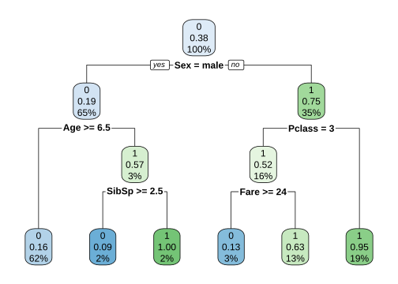
Variable explanations
0 corresponds to “Did Not Survive”; 1 corresponds to “Survived”
Pclass: Passenger Class. This is a categorical feature indicating the class of travel of the passenger aboard the Titanic. It typically has three categories: - 1 for first-class (the highest class), - 2 for second-class, - 3 for third-class (the lowest class).
Sex: The sex of the passenger (male or female). This is a binary categorical feature.
Age: The age of the passenger. This is a continuous numerical feature.
SibSp: The number of siblings or spouses the passenger had aboard the Titanic. This is a discrete numerical feature.
Parch: The number of parents or children the passenger had aboard the Titanic. This is also a discrete numerical feature. Note that some relations, like nannies or friends, may not be included in this count.
Fare: The amount of money the passenger paid for the ticket. This is a continuous numerical feature.
A few things to keep in mind
A tree chooses a feature and a split point (e.g., if
Age >= 6.5) to partition the data into subsets that are as homogeneous “pure” as possible (meaning that the node contains data points from predominantly one class)- Just know there are measures for evaluating the “purity” of a node, e.g., Gini Impurity, Entropy, Classification Error
This process is repeated recursively, forming a tree structure until certain stopping criteria are met (e.g., when a node has a small number of observations, some maximum depth).
Trees are also pruned to reduce complexity and help prevent overfitting.
Model Workflows
In tidyModels, we use something called a workflow to streamline our model-building process. Think of a workflow as a ‘recipe’ that combines data preprocessing and modeling steps into one neat package. This approach ensures that everything needed for our model to work — from preparing the data to making predictions — is bundled together.
Let’s break down what each part of a workflow does and why it’s helpful.
What is a Workflow?
A workflow in tidyModels consists of two main parts:
Preprocessor: This handles all the data preparation tasks.
Model: This is where we specify the type of model we want to fit to our data.
Step 1: The Preprocessor
The preprocessor is responsible for preparing our data before it gets to the model. This can be as simple or complex as needed:
For straightforward tasks, we might use a simple formula like y ~ x1 + x2, which just tells the model what our target (y) and predictor variables (x1, x2) are.
For more complex tasks, we can use a recipe. Recipes are powerful because they let us add specific preprocessing steps like:
- Removing variables with no variance,
- Converting categorical variables into numeric ‘dummy’ variables,
- Handling missing data by filling in or categorizing NA values,
- Applying advanced techniques like PCA (Principal Component Analysis) to reduce the number of features
With recipes, we have a lot of flexibility in how we transform and prepare our data.
Step 2: The Model
Next, we specify the model we want to fit. This could be anything from a linear regression to a decision tree. In tidyModels, we can easily swap out different model types within the workflow without changing the preprocessing steps, allowing us to experiment with different approaches.
Why Use a Workflow?
Consistency and Reproducibility: When we apply a workflow to new data, it automatically uses the same preprocessing steps as with the training data. This consistency is important because it prevents any mismatch between training and testing data, helping us achieve more reliable results.
Better Organization: If you’re experimenting with multiple models, workflows make it easier to keep track of each model’s steps. Rather than manually re-running preprocessing each time, you have a ready-to-use workflow for each model, keeping things organized and clear.
Improved Handling of New Data: When we bring in new data that has slightly different values (e.g., new categories in a factor), workflows manage these changes more gracefully than base R. This makes workflows especially helpful in real-world applications where incoming data can vary.
A model workflow
# Step 1: Specify the model with desired parameters
tree_spec <-
decision_tree(cost_complexity = 0.002) %>% # Define model type
set_mode("classification") # Set mode to "classification" for binary outcomes
# Step 2: Build the workflow
tree_wflow <- workflow() %>%
add_formula(tip ~ .) %>% # Add the formula defining target and predictors. This is the "preprocessor" in this case
add_model(tree_spec) # Attach the specified model
# Step 3: Fit the workflow to training data
tree_fit <-
tree_wflow %>%
fit(data = taxi_train) # Fit the workflow to the training dataset
Tip
“Shortcut” by specifying the preprocessor and model specs directly in the workflow() call:
workflow(tip ~ ., tree_spec) %>%
fit(data = taxi_train) Your turn
Fill out the chunk below to create a workflow for a logistic regression model
# Step 1: Specify the model with desired parameters
# Here, create a logistic regression model specification
# Set the mode to "classification" since we're predicting a binary outcome
### logi_spec <- ...
# Step 2: Build the workflow
# Initialize a workflow object
# Add the formula (e.g., tip ~ .) to specify the target and predictors
# Attach the logistic regression model specified in Step 1
### logi_wflow <- ..
# Step 3: Fit the workflow to training data
# Use the fit() function to apply the workflow to the training (NOT TEST!) data (e.g., taxi_train)
### logi_fit <- ... Pre-processing: Adding “recipes”
- Hypothetical additions just for illustrative purposes
# Define a preprocessing recipe with various steps
tree_rec <-
step_date(some_var1, features = c("dow", "month", "year")) %>% # Extract date features like day of week, month, and year from a date variable
step_rm(some_var1) %>% # Remove the original date variable after extracting features
step_dummy(all_nominal_predictors()) %>% # Convert categorical predictors into dummy (one-hot encoded) variables
step_zv(all_predictors()) %>% # Remove any predictors with zero variance (i.e., predictors that are constant)
step_normalize(all_numeric_predictors()) %>% # Normalize all numeric predictors to have mean 0 and standard deviation 1
step_pca(all_numeric_predictors()) # Apply Principal Component Analysis (PCA) to reduce dimensionality of numeric predictors
# Build the workflow by combining the recipe and model
tree_wflow <- workflow() %>%
add_formula(tip ~ .) %>% # Specify the formula for the target variable (tip) and predictors (all other columns)
add_recipe(tree_rec) %>% # Add the preprocessing recipe defined above
add_model(tree_spec) # Attach the specified model (e.g., decision tree model) to the workflow- Visit https://www.tidymodels.org/find/recipes/ for details on all possible recipes
How do we understand our new tree_fit/logi_fit models?
Predict with your model
Up to this point, we have used the training data to build the decision tree. The model has learned which predictors to use, where to split the data, and what class or probability to assign to each terminal node.
What happens when you run predict(logi_fit, new_data = taxi_test)
tree_fit %>%
predict(new_data = taxi_test)# A tibble: 2,500 × 1
.pred_class
<fct>
1 yes
2 yes
3 yes
4 yes
5 yes
6 yes
7 yes
8 yes
9 yes
10 yes
# ℹ 2,490 more rowsAdd the predictions back into our dataset.
taxi_results <- tree_fit %>%
augment(new_data = taxi_test)
taxi_results# A tibble: 2,500 × 10
.pred_class .pred_yes .pred_no tip distance company local dow month hour
<fct> <dbl> <dbl> <fct> <dbl> <fct> <fct> <fct> <fct> <int>
1 yes 0.917 0.0828 yes 0.94 Sun Ta… yes Sat Apr 23
2 yes 0.917 0.0828 yes 1 Taxi A… no Mon Feb 18
3 yes 0.917 0.0828 yes 1.91 Flash … no Wed Apr 15
4 yes 0.917 0.0828 yes 1.1 Chicag… no Sat Mar 10
5 yes 0.790 0.210 yes 11.7 other no Wed Mar 18
6 yes 0.962 0.0383 yes 17.8 City S… no Mon Mar 9
7 yes 0.917 0.0828 yes 0.53 Taxica… yes Wed Apr 8
8 yes 0.917 0.0828 yes 1.14 City S… no Wed Mar 14
9 yes 0.917 0.0828 yes 1.77 other no Thu Apr 15
10 yes 0.962 0.0383 yes 18.6 Flash … no Thu Apr 12
# ℹ 2,490 more rowsaugment() passes each test observation through the fitted tree and adds the resulting class prediction and class probabilities to the original test data.
At this stage, the model is frozen: it does not learn from or change in response to the test data. The test observations simply follow the decision rules learned from the training data. The known test outcomes are used only to compare the model’s predictions with what actually happened.
Important
The test set should be used only after model selection and tuning are complete. Repeatedly changing the model based on its test performance would allow information from the test set to influence model development, making it less useful as an unbiased evaluation of performance on new data.
The tidymodels prediction guarantee!
- The predictions will always be inside a tibble
- The column names and types are unsurprising and predictable
- The number of rows in
new_dataand the output are the same
Visualizing the fitted decision tree
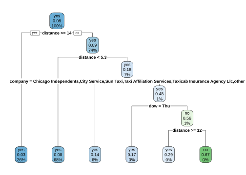
Additional methods for understanding models
Learn more at https://www.tmwr.org/explain.html
Your turn
For the fitted logistic regression model, use
augment, thenglanceandtidy. What happens with each?
Caution
augment() works at the observation level. It adds the predicted class and predicted probabilities to each row of the supplied data.
glance() works at the whole-model level. It produces a one-row summary containing overall model information such as AIC, BIC, deviance, log-likelihood, and the number of observations.
tidy() works at the predictor level. It produces one row for each model coefficient, including its estimate, standard error, test statistic, and p-value. For logistic regression, the estimates are in log-odds units unless they are exponentiated into odds ratios. The decision tree separately decides which predictors and cutoff values to use. We then compare the two models’ predictive performance using resampling or test data.
PART 4: Metrics for model performance
Warning
In the following we will be working on evaluation metrics based on the training set data, but keep in mind that you also need to run the metrics on the test data. If you fail to do so, it can give a misleading impression of model performance. Hopefully this will be clearer soon.
augment(tree_fit, new_data = taxi_train) %>%
relocate(tip, .pred_class, .pred_yes, .pred_no)# A tibble: 7,500 × 10
tip .pred_class .pred_yes .pred_no distance company local dow month hour
<fct> <fct> <dbl> <dbl> <dbl> <fct> <fct> <fct> <fct> <int>
1 yes yes 0.917 0.0828 0.7 Taxi A… yes Tue Mar 18
2 yes yes 0.917 0.0828 0.99 Sun Ta… yes Tue Jan 8
3 yes yes 0.917 0.0828 1.78 other no Sat Mar 22
4 yes yes 0.917 0.0828 0 Taxi A… yes Wed Apr 15
5 yes yes 0.917 0.0828 0 Taxi A… no Sun Jan 21
6 yes yes 0.917 0.0828 2.3 other no Sat Apr 21
7 yes yes 0.790 0.210 6.35 Sun Ta… no Wed Mar 16
8 yes yes 0.917 0.0828 2.79 other no Sun Feb 14
9 yes yes 0.962 0.0383 16.6 other no Sun Apr 18
10 yes yes 0.917 0.0828 0.02 Chicag… yes Sun Apr 15
# ℹ 7,490 more rowsConfusion matrix
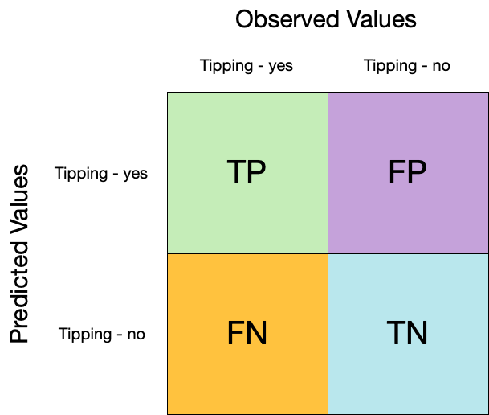
conf_mat() can be used to see how well the model is doing at prediction
augment(tree_fit, new_data = taxi_train) %>%
conf_mat(truth = tip, estimate = .pred_class) %>%
autoplot(type = "heatmap")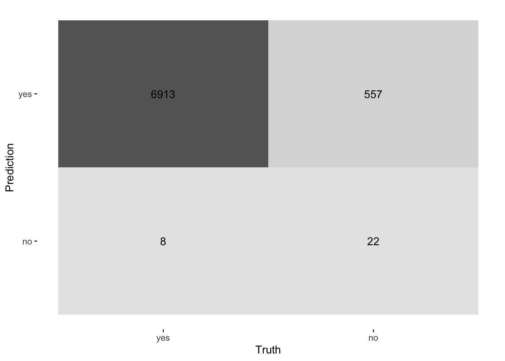
Accuracy
This is a straightforward measure of the proportion of correct predictions out of all predictions.
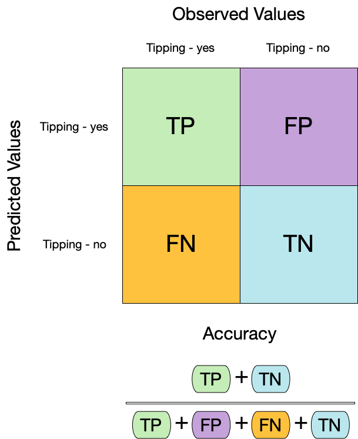
augment(tree_fit, new_data = taxi_train) %>%
mutate(.pred_class = factor("yes", levels = c("yes", "no"))) %>%
accuracy(truth = tip, estimate = .pred_class)# A tibble: 1 × 3
.metric .estimator .estimate
<chr> <chr> <dbl>
1 accuracy binary 0.923
Dangers of accuracy
We need to be careful of using accuracy() since it can give “good” performance by only predicting one way with imbalanced data
Sensitivity
Where accuracy provides a quick understanding of how often the model is correct, sensitivity is an important measure when the cost of missing a positive case (false negative) is high. In our scenario, a positive case is the outcome variable coded as “1” (tip: yes). In other scenarios, this is more consequential (such as correctly predicting the percentage of sick people who have some targeted condition).
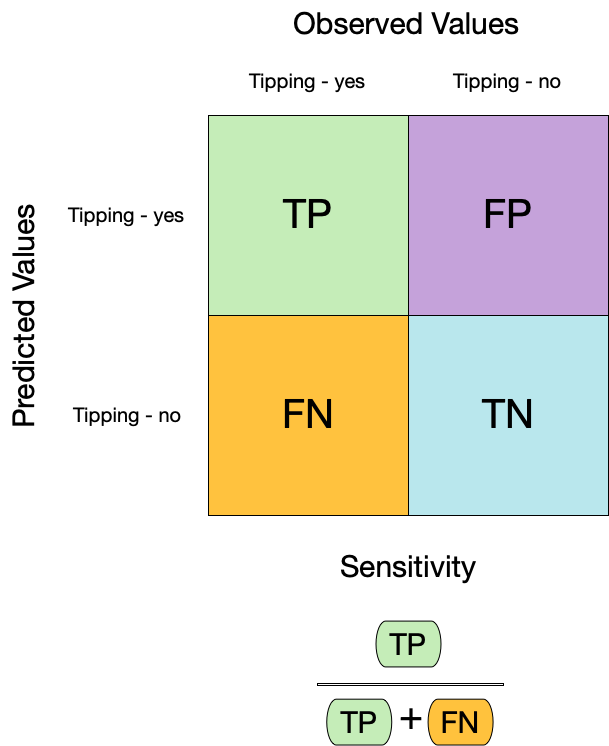
augment(tree_fit, new_data = taxi_train) %>%
sensitivity(truth = tip, estimate = .pred_class)# A tibble: 1 × 3
.metric .estimator .estimate
<chr> <chr> <dbl>
1 sensitivity binary 0.999Specificity
This is essentially the compliment of sensitivity. Specificity is an important measure of how well the model correctly predicts the true negative. In our scenario, a true negative is the outcome variable coded as “0” (tip: no). Pay attention to specificity when the cost of a false positive is high (like convicting an innocent person).
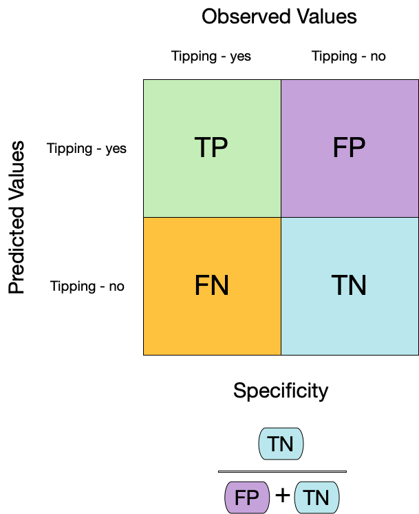
augment(tree_fit, new_data = taxi_train) %>%
specificity(truth = tip, estimate = .pred_class)# A tibble: 1 × 3
.metric .estimator .estimate
<chr> <chr> <dbl>
1 specificity binary 0.0380Combining the metrics
We can use metric_set() to combine multiple calculations into a single table
taxi_metrics <- metric_set(accuracy, specificity, sensitivity)
augment(tree_fit, new_data = taxi_train) %>%
taxi_metrics(truth = tip, estimate = .pred_class)# A tibble: 3 × 3
.metric .estimator .estimate
<chr> <chr> <dbl>
1 accuracy binary 0.925
2 specificity binary 0.0380
3 sensitivity binary 0.999 All yardstick metric functions work with grouped data frames!
taxi_metrics <- metric_set(accuracy, specificity, sensitivity)
augment(tree_fit, new_data = taxi_train) %>%
group_by(local) %>%
taxi_metrics(truth = tip, estimate = .pred_class)# A tibble: 6 × 4
local .metric .estimator .estimate
<fct> <chr> <chr> <dbl>
1 yes accuracy binary 0.899
2 no accuracy binary 0.931
3 yes specificity binary 0.00699
4 no specificity binary 0.0482
5 yes sensitivity binary 1
6 no sensitivity binary 0.999 Your turn
Compute a confusion matrix for your logistic model and produce a table that shows its accuracy, specificity, sensitivity scores
An important aside: Two class data
These metrics assume that we know the threshold for converting “soft” probability predictions into “hard” class predictions.
Is a 50% threshold good?
What happens if we say that we need to be 80% sure to declare an event?
- sensitivity ⬇️, specificity ⬆️ In other words: more likely to predict negatives(no tips)
What happens for a 20% threshold?
- sensitivity ⬆️, specificity ⬇️ In other words: more likely to predict positives(yes tips)
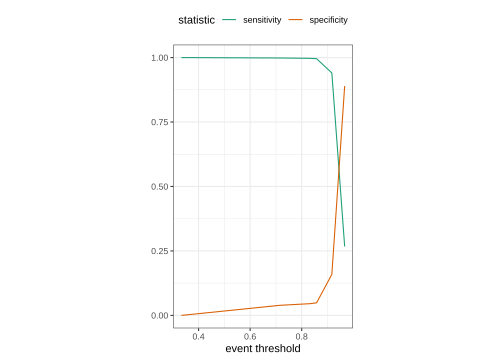
ROC curves
An ROC curve, or Receiver Operating Characteristic curve, is a powerful visual tool that helps us evaluate how well our model distinguishes between two classes — in our case, predicting a tip (yes) or no tip.
What Does the ROC Curve Show Us?
The ROC curve plots sensitivity (true positive rate) on the y-axis against 1 - specificity (false positive rate) on the x-axis, across all possible threshold values. This means:
Each point on the curve represents a different threshold.
The curve helps us see how sensitivity and specificity balance out as we adjust that threshold.
Why Is This Useful?
The ROC curve lets us understand how well our model separates positive and negative classes over a range of thresholds, rather than just one. This can reveal if the model maintains a good trade-off between correctly identifying tips and avoiding false positives as the threshold changes.
For example:
At lower thresholds, the model is more likely to predict ‘yes tip,’ which increases sensitivity but might lower specificity.
At higher thresholds, the model is stricter, predicting ‘no tip’ more often, which decreases sensitivity but increases specificity.
Why 1-sensitivity for FPR?
Given that sensitivity is the true positive rate, and specificity is the true negative rate. Hence 1 - specificity is the false positive rate.
Here’s the ROC curve for our model based on the training data:
augment(tree_fit, new_data = taxi_train) %>%
roc_curve(truth = tip, .pred_yes) %>%
autoplot() +
labs(x="FPR, 1-specificity", y="TPR, or sensitivity")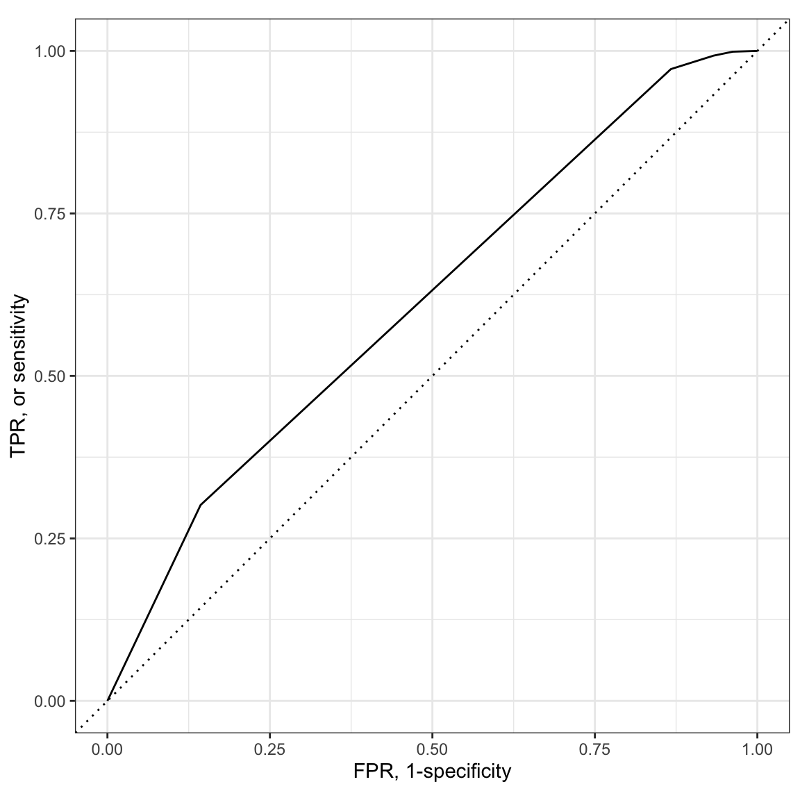
How do we interpret:
A key takeaway from the ROC curve is the AUC (Area Under the Curve). The AUC gives us a single value that summarizes how well the model distinguishes between classes across all thresholds:
AUC = 1: Perfect separation of classes (ideal).
AUC = 0.5: No better than random guessing.
In general, a higher AUC means better performance. Our AUC value, shown here, helps us quickly assess the model’s ability to separate classes across a wide range of thresholds.
- ROC AUC = 1 💯
- ROC AUC = 0.5 😢
Let’s get the actual value for AUC:
augment(tree_fit, new_data = taxi_train) %>%
roc_auc(truth = tip, .pred_yes)# A tibble: 1 × 3
.metric .estimator .estimate
<chr> <chr> <dbl>
1 roc_auc binary 0.614
Note
ROC curves are insensitive to class imbalance.
Note
Keep in mind that each point on the ROC curve corresponds to a specific threshold. While the curve shows us the balance of sensitivity and specificity visually, we can’t see the exact thresholds on the curve itself. To pinpoint a particular threshold, we’d need to look at our data.
Your turn
Compute and plot an ROC curve for your logistic model
Recap so far
Alright, where are we at with things:
We created a workflow for a decision tree/logistic regression model to predict tips. Here’s a reminder of what each part does:
tree_fit/logi_fit: This is our final, trained model. We built it by:Specifying a model with classification mode.
Using a workflow (
tree_wflow/logi_wflow) to package the preprocessing steps (formula and recipe) and model together.Fitting this workflow to the training dataset (
taxi_train), resulting intree_fit/logi_fit.We have taken
tree_fit/logi_fitand determined how well it performs with the training dataset based (computing a bunch of metrics along the way)
Dataset Reminder — taxi_test:
taxi_testis our test dataset that we held out during training.- We’ll use
taxi_testto evaluate how welltree_fit/logi_fitperforms on new, unseen data.
PART 5: Using resampling to estimate performance
⚠️ Dangers of Overfitting ⚠️
Models can easily be overfitted to the training data, meaning they perform well on the training data but poorly on unseen data.
Fitting to your training data

Problems when generalizing to test data

Is our model doing well on training but poorly on new data?
Here’s our model performance on the training data
tree_fit %>%
augment(taxi_train)# A tibble: 7,500 × 10
.pred_class .pred_yes .pred_no tip distance company local dow month hour
<fct> <dbl> <dbl> <fct> <dbl> <fct> <fct> <fct> <fct> <int>
1 yes 0.917 0.0828 yes 0.7 Taxi A… yes Tue Mar 18
2 yes 0.917 0.0828 yes 0.99 Sun Ta… yes Tue Jan 8
3 yes 0.917 0.0828 yes 1.78 other no Sat Mar 22
4 yes 0.917 0.0828 yes 0 Taxi A… yes Wed Apr 15
5 yes 0.917 0.0828 yes 0 Taxi A… no Sun Jan 21
6 yes 0.917 0.0828 yes 2.3 other no Sat Apr 21
7 yes 0.790 0.210 yes 6.35 Sun Ta… no Wed Mar 16
8 yes 0.917 0.0828 yes 2.79 other no Sun Feb 14
9 yes 0.962 0.0383 yes 16.6 other no Sun Apr 18
10 yes 0.917 0.0828 yes 0.02 Chicag… yes Sun Apr 15
# ℹ 7,490 more rowstree_fit %>%
augment(taxi_train) %>%
accuracy(tip, .pred_class)# A tibble: 1 × 3
.metric .estimator .estimate
<chr> <chr> <dbl>
1 accuracy binary 0.925Here’s our model performance on the test data (unseen data)
tree_fit %>%
augment(taxi_test) %>%
accuracy(tip, .pred_class)# A tibble: 1 × 3
.metric .estimator .estimate
<chr> <chr> <dbl>
1 accuracy binary 0.913The comparison between training accuracy and test accuracy are very close: 0.924 vs. 0.914. What does this mean?
- The model generalizes reasonably well (good!)
- Or that your test set may not be large or representative enough to fully assess generalization
This comparison alone doesn’t give us the full picture. It’s not enough.
Why? Because this evaluation depends on just one split of the data into training and test sets. If this split isn’t representative of all possible data scenarios, it could lead to overly optimistic or overly pessimistic results.
Better to first fit on training data via a process of resampling
To truly understand how well our model performs, we need to use resampling techniques like cross-validation.
Cross-validation gives us multiple test scenarios by repeatedly splitting the training data and evaluating the model on different subsets. This not only gives us a more robust estimate of performance but also highlights whether the model might be overfitting or underfitting.
V-fold (K-fold) Cross-validation
We want to repeatedly sample (“fold”) the training data to create unique subsets (e.g., Resample 1, Resample 2, Resample B) for analysis and assessment.
We randomly split the training data into V (or K) distinct blocks of roughly equal size (AKA the “folds”).


In Fold 1:
We leave out the first block of analysis data and fit a model
This model is used to predict the held-out block of assessment data
We continue this process until we’ve predicted all V assessment blocks
This process ensures that every observation from the original dataset has the chance of appearing in the analysis and assessment set

Other advantages of resampling with V-fold cross-validation
Efficient use of data: When the amount of data is limited, it’s a way to use every data point in both the training and validation
Model tuning: Useful method for selecting the model with the best tuning parameters (hyperparameters). You can perform cross-validation for various combinations of parameters and choose the one that performs best.
Comparing models What if we want to compare more models to see if there are important differences? Cross-validation allows us to do just this with just the training data
Your turn
If we use 10 folds, what percent of the training data ends up in ANALYSIS for each fold? for ASSESSMENT for each fold?
Let’s do some cross-validation
taxi_folds <- vfold_cv(taxi_train) # v = 10 is default
taxi_folds# 10-fold cross-validation
# A tibble: 10 × 2
splits id
<list> <chr>
1 <split [6750/750]> Fold01
2 <split [6750/750]> Fold02
3 <split [6750/750]> Fold03
4 <split [6750/750]> Fold04
5 <split [6750/750]> Fold05
6 <split [6750/750]> Fold06
7 <split [6750/750]> Fold07
8 <split [6750/750]> Fold08
9 <split [6750/750]> Fold09
10 <split [6750/750]> Fold10
Note
These separate sets are in a list column, which is a way to store non-atomic types in a dataframe
We can do this with how many folds we want
vfold_cv(taxi_train, v = 5)# 5-fold cross-validation
# A tibble: 5 × 2
splits id
<list> <chr>
1 <split [6000/1500]> Fold1
2 <split [6000/1500]> Fold2
3 <split [6000/1500]> Fold3
4 <split [6000/1500]> Fold4
5 <split [6000/1500]> Fold5Stratification often helps, with very little downside
vfold_cv(taxi_train, strata = tip)# 10-fold cross-validation using stratification
# A tibble: 10 × 2
splits id
<list> <chr>
1 <split [6750/750]> Fold01
2 <split [6750/750]> Fold02
3 <split [6750/750]> Fold03
4 <split [6750/750]> Fold04
5 <split [6750/750]> Fold05
6 <split [6750/750]> Fold06
7 <split [6750/750]> Fold07
8 <split [6750/750]> Fold08
9 <split [6750/750]> Fold09
10 <split [6750/750]> Fold10We’ll use this setup:
Important
Set the seed when creating resamples
set.seed(123)
taxi_folds <- vfold_cv(taxi_train, v = 10, strata = tip)
taxi_folds# 10-fold cross-validation using stratification
# A tibble: 10 × 2
splits id
<list> <chr>
1 <split [6750/750]> Fold01
2 <split [6750/750]> Fold02
3 <split [6750/750]> Fold03
4 <split [6750/750]> Fold04
5 <split [6750/750]> Fold05
6 <split [6750/750]> Fold06
7 <split [6750/750]> Fold07
8 <split [6750/750]> Fold08
9 <split [6750/750]> Fold09
10 <split [6750/750]> Fold10Fit our model to the resamples!
We will fit 10 models on 10 slightly different analysis sets.
taxi_res <- fit_resamples(tree_wflow, taxi_folds)
taxi_res# Resampling results
# 10-fold cross-validation using stratification
# A tibble: 10 × 4
splits id .metrics .notes
<list> <chr> <list> <list>
1 <split [6750/750]> Fold01 <tibble [3 × 4]> <tibble [0 × 4]>
2 <split [6750/750]> Fold02 <tibble [3 × 4]> <tibble [0 × 4]>
3 <split [6750/750]> Fold03 <tibble [3 × 4]> <tibble [0 × 4]>
4 <split [6750/750]> Fold04 <tibble [3 × 4]> <tibble [0 × 4]>
5 <split [6750/750]> Fold05 <tibble [3 × 4]> <tibble [0 × 4]>
6 <split [6750/750]> Fold06 <tibble [3 × 4]> <tibble [0 × 4]>
7 <split [6750/750]> Fold07 <tibble [3 × 4]> <tibble [0 × 4]>
8 <split [6750/750]> Fold08 <tibble [3 × 4]> <tibble [0 × 4]>
9 <split [6750/750]> Fold09 <tibble [3 × 4]> <tibble [0 × 4]>
10 <split [6750/750]> Fold10 <tibble [3 × 4]> <tibble [0 × 4]>Your turn
Now run
vfold_cvto get 10 splits and refit your logistic regression workflow (usingfit_resamples)
Evaluating model performance
- The goal of resampling is to produce a single estimate of performance for a model
- The final performance is based on the hold-out predictions by averaging the statistics from the V folds.
taxi_res %>%
collect_metrics()# A tibble: 3 × 6
.metric .estimator mean n std_err .config
<chr> <chr> <dbl> <int> <dbl> <chr>
1 accuracy binary 0.920 10 0.00218 pre0_mod0_post0
2 brier_class binary 0.0713 10 0.00183 pre0_mod0_post0
3 roc_auc binary 0.605 10 0.0122 pre0_mod0_post0
Note
Even though we end up estimating V models, these models are discarded after we have our performance estimate. 🗑
We can reliably measure performance using only the training data 🎉
Note
collect_metrics() is one of a suite of collect_*() functions that can be used to work with columns of tuning results. Most columns in a tuning result prefixed with . have a corresponding collect_*() function with options for common summaries.
Your turn
Use
collect_metrics()to get a single estimates of performance on your cross-validated logistic regressionGenerate a new confusion matrix for your cross-validated logistic regression
Compare model performance with all the training data vs. resampling (subsets of training data)
ROC AUC from all the training data:
augment(tree_fit, new_data = taxi_train) %>%
roc_auc(truth = tip, .pred_yes)# A tibble: 1 × 3
.metric .estimator .estimate
<chr> <chr> <dbl>
1 roc_auc binary 0.614ROC AUC from resampling (subsets of training data):
taxi_res %>%
collect_metrics() %>%
select(.metric, mean, n)# A tibble: 3 × 3
.metric mean n
<chr> <dbl> <int>
1 accuracy 0.920 10
2 brier_class 0.0713 10
3 roc_auc 0.605 10All the training data was slightly optimistic (0.611), resampling gives us a better estimate of expected performance (0.592).
Recap of proper workflow
- Split the Data into Training and Testing Sets
- Specify the Model
- Preprocess the Data with Recipes (Optional)
- Create a Workflow
- Validate the Model with Resampling (e.g., Cross-Validation)
- Fit the Final Model (using all the training data)
- Test the Final Model
What you would report
Training Performance (Cross-Validation)
Summarize the model’s expected performance on unseen data, using the mean and standard deviation of metrics across folds. This gives an indication of how well the model is expected to perform on unseen data, taking into account the variability due to different subsets of the training data.
- Present metrics that summarize the model’s performance across the folds
- Accuracy: mean and standard deviation
- Sensitivity
- Specificity
- AUC
Verify Performance w/ Test Data
Present metrics for the final model evaluated on the test set to show its actual generalizability. The performance metrics derived from the held-out test set give the reader an understanding of how the model performs on completely unseen data. This is the ultimate test of the model’s generalizability.
taxi_metrics <- metric_set(accuracy, specificity, sensitivity)
augment(tree_fit, new_data = taxi_test) %>% ## NOTE: switched out taxi_train for taxi_test
taxi_metrics(truth = tip, estimate = .pred_class)# A tibble: 3 × 3
.metric .estimator .estimate
<chr> <chr> <dbl>
1 accuracy binary 0.913
2 specificity binary 0.0142
3 sensitivity binary 0.997 augment(tree_fit, new_data = taxi_test) %>%
roc_auc(truth = tip, .pred_yes)# A tibble: 1 × 3
.metric .estimator .estimate
<chr> <chr> <dbl>
1 roc_auc binary 0.625Overfitting Discussion
Discuss any signs of overfitting observed (for instance, if there was a large discrepancy between the cross-validation performance and the test set performance).
Model Interpretability
It’s often important to discuss what the model’s parameters or predictions mean in the context of the subject area.
Your turn
Generate a final report for your regression logistic model, but now using the test set
Completing the whole game
PART 6: Next Steps?
Adjust the threshold setting
Random forest 🌳🌲🌴🌵🌳🌳🌴🌲🌵🌴🌳🌵
- Ensemble many decision tree models
- All the trees vote! 🗳️
- Bootstrap aggregating + random predictor sampling
Model tuning
- Requires tuning model parameters with more advanced machine learning methods
- Growing phase; tree pruning
- Grid search
- Iterative search
- Nice resource: https://topepo.github.io/2022-nyr-workshop/5-tuning.html#1
- Growing phase; tree pruning
Variable importance
vippackage
Alternate resampling schemes: Bootstrapping
Assess model accuracy and stability
From your original training dataset, create many (often thousands) of new “bootstrap” training datasets by sampling with replacement.

- After running the bootstrap process many times, you’ll end up with a distribution of performance metrics (like accuracy or AUC).
Handling Small Datasets: It is particularly useful when dealing with small datasets where you might not be able to afford to set aside a portion of the data as a test set.
Uncertainty Estimates: It provides a way to create confidence intervals for various performance metrics, giving a sense of how uncertain those metrics are.
set.seed(3214)
bootstraps(taxi_train)# Bootstrap sampling
# A tibble: 25 × 2
splits id
<list> <chr>
1 <split [7500/2725]> Bootstrap01
2 <split [7500/2733]> Bootstrap02
3 <split [7500/2815]> Bootstrap03
4 <split [7500/2782]> Bootstrap04
5 <split [7500/2786]> Bootstrap05
6 <split [7500/2761]> Bootstrap06
7 <split [7500/2818]> Bootstrap07
8 <split [7500/2762]> Bootstrap08
9 <split [7500/2805]> Bootstrap09
10 <split [7500/2785]> Bootstrap10
# ℹ 15 more rows